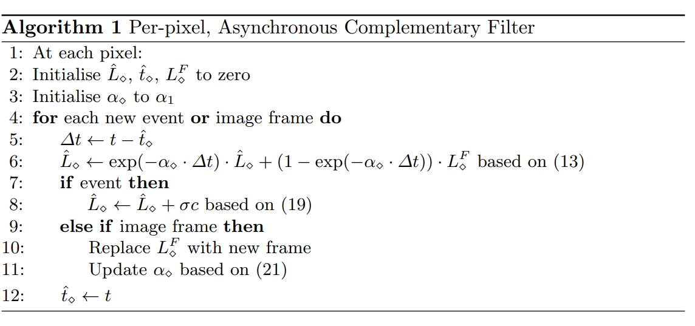
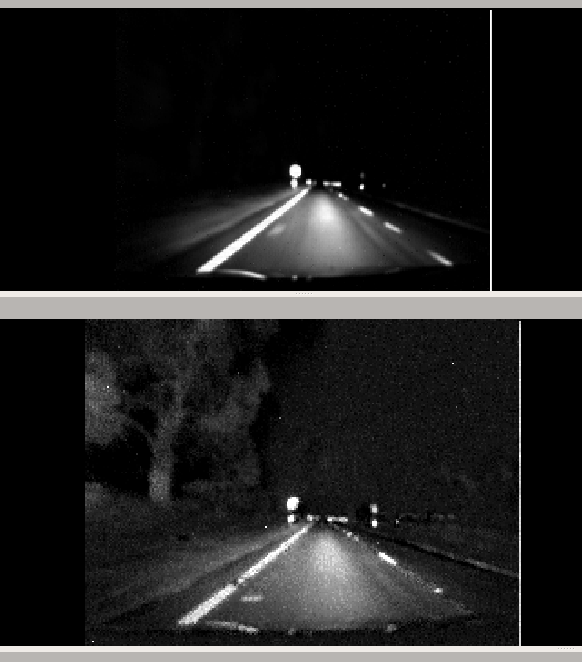

Continuous-time Intensity Estimation Using Event Cameras
这篇文章给出了一个使用event camera增强普通camera的算法。
Event Camera 与数学基础
设为坐标与时间,代表原照片对应坐标、时间上的光强度。
event camera,每一个像素会存储光强的变化，超过一个阈值后会发出一个对应的冲激，会在各个时刻在各个相机像素stream,给出,其中为冲激函数。指正负极性
取log为:
互补滤波器
公式ODE：
(个人理解其传递函数为 )
本文提到，用低通滤波器处理相机原数据，用高通滤波器处理event camera的数据.
具体算法:

第六行：指的是时间间隔内，相当于前文提到的ODE右边只有第二项，求解这个常微分方程。
第八行：
是将冲激值直接加到对应的坐标中
第十行，注意不直接改变输出的，但是会改变后面循环的第13行
第十一行，描述的是根据过曝光或者低曝光的可能(每个坐标点有对应的值,与当前相机对应坐标的光强有关).直觉上来说越小，越信任event camera,在光强接近最大最小值的时候信任event camera,光强中间值的时候相对更信任基础相机，其公式如下:
本文
在本人(Owen Liu)电脑里面运行得到的结果

上半图为原图，下半图为增强后的图.